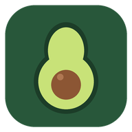

Keto Famille sur iPhone
Gratuit · sans compte · fonctionne hors ligne
Recommandé
Installer en 3 étapes
Ouvrez cette page dans Safari.
Télécharger Keto Famille- Touchez Autoriser quand l'iPhone propose de télécharger le profil, puis Fermer.
- Ouvrez Réglages : en haut, touchez Profil téléchargé (ou Général → VPN et gestion de l'appareil).
- Touchez Installer (deux fois) et entrez le code de l'iPhone. L'icône apparaît sur l'écran d'accueil.
La mention « Non vérifié » est normale pour une application familiale hors App Store. Le profil ajoute seulement l'icône ; il ne collecte aucune donnée et se supprime dans Réglages → Général → VPN et gestion de l'appareil.
Autre méthode, sans profil
- Ouvrez l'application dans Safari.
- Touchez le bouton Partager (carré avec une flèche).
- Choisissez Sur l'écran d'accueil, puis Ajouter.
Android ? Télécharger l'APK